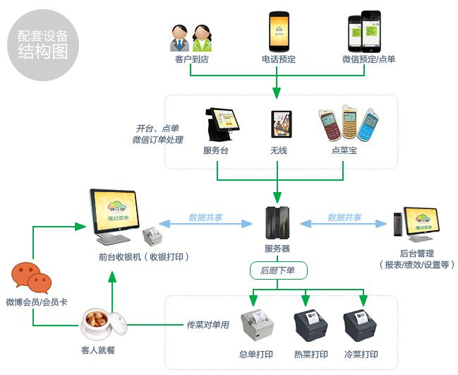

餐饮软件介绍
软件概述
该款餐饮管理软件安装和操作简单方便，适合各种大小型餐厅，以及快餐、中餐、西餐、火锅店等各种餐饮业态。是国内餐饮行业颇为知名的管理软件。
所有用户都可以享受我们的升级服务。为餐厅提供硬件采购、系统建设、维护服务等。除了餐厅内部的管理外，我们还有“手机查询店铺营业状态”的增值服务功能，即可随时随地通过微信查询店铺的营业状态、今天已经有几桌客人、销售金额是多少等。将极大提升店主对自己店铺的管理能力，如果您对只能查看当天营业额而遗憾的话，可以选择我们的“静态报表功能”，同样是手机查询营业额，不仅可以查看每天营业额，还可以查看近一周的营业额的趋势变化。
微信是极为重要的社交媒体，各个餐厅都非常重视通过微信来宣传餐厅。我们开发的“微信会员营销模块”可以方便有效地实现会员积分、微信会员折扣等功能，以及更多体贴的微信营销设计和服务。有效服务微信网友，才能获得更好的传播价值。
我们还开发“手机微信餐厅”功能，开通“手机微信餐厅”之后网友就可以通过关注店铺的微信公众号，在微信里面手机预订、手机点单、甚至在线支付等功能，成为您餐厅开展电子商务的有力工具。
功能介绍
开台收银：
开台、点单、收银的操作，以及并台、拆台、加菜、减菜、特殊要求和口味等。
快餐模式：
支持快餐模式，快速进行点单收银操作，点单与结账一步到位，有效节约收银员的操作时间。
报表中心：
丰富的报表，包括营业综合统计报表、菜品汇总报表、营业收入成本利润报表、员工绩效表、会员分析和仓库报表等。
会员管理：
会员类型的设置，以及相关会员的折扣设置、会员消费、会员积分等。
预订管理：
支持当天的预订管理，以及远期的预订管理，并支持“来电宝”电话号码自动识别功能。
无线点菜：
支持“点菜宝”，以及IPAD点菜、安卓平板电脑点菜、手机点菜等多种无线点菜模式。
基础设置：
包括会员、权限、营业时间、以及各种相关的设置功能。
微信CRM客户关系管理：
微信会员积分、微信会员折扣等功能，以及更多体贴的微信营销设计和服务。
手机微信餐厅：
手机微信预订、微信点餐、甚至在线支付等相关功能。
店员好评系统:
扫描服务员专属二维码，评价店员服务，提高服务质量。
微信查询店铺营业状态
手机微信查询当天营业额，随时随地通过微信查询店铺的营业状态。
静态报表
手机上查看每天营业额，查看几天内营业额增长趋势。
多店会员卡统一
多店会员卡同步消费、充值和积分。
系统结构
